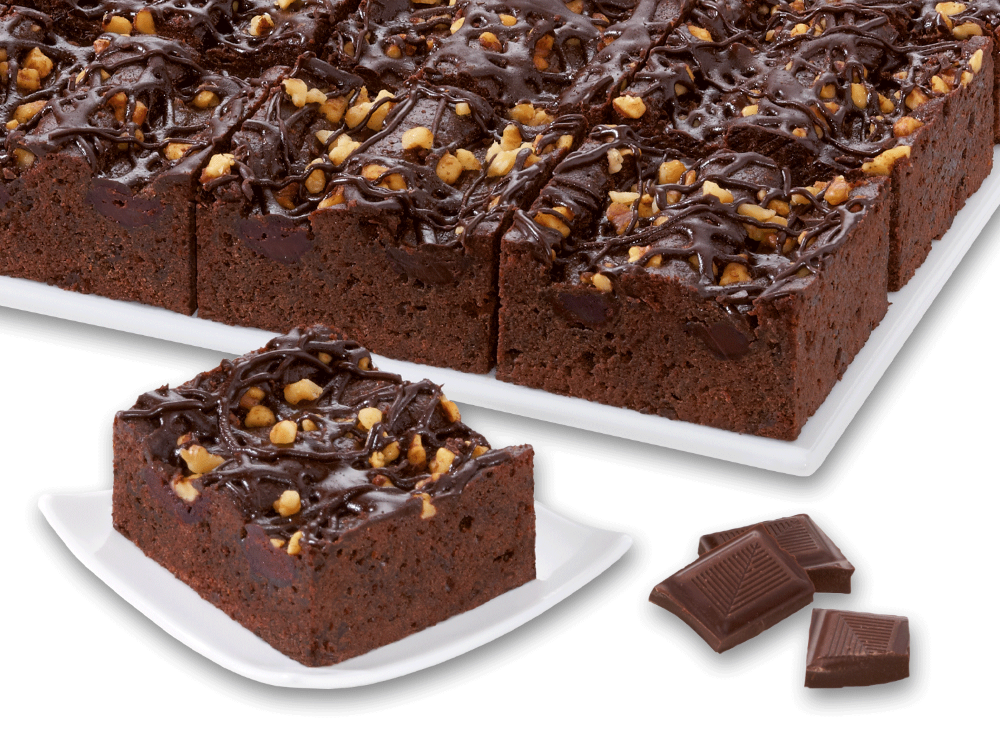

BROWNIE DE CHOCOLATE (LISTA Y MULTIMEDIA)

Aprende con este vídeo a preparar de forma fácil y rápida el mejor brownie de chocolate del mundo. Por fuera queda crujiente y por dentro jugoso con el chocolate fundido como si fuera un volcán o couland de chocolate. Os lo recomiendo al 100% probarlo!
Ingredientes:
- 240 g de mantequilla sin sal
- 150 g de azúcar
- 150 g de azúcar moreno
- 30 ml de aceite de girasol
- 4 huevos
- 1 cdta de esencia de vainilla
- 130 g de harina de trigo
- 100 g de cacao en polvo
- 1/4 de cdta de sal fina
- 200 g de chocolate negro
PREPARACION: